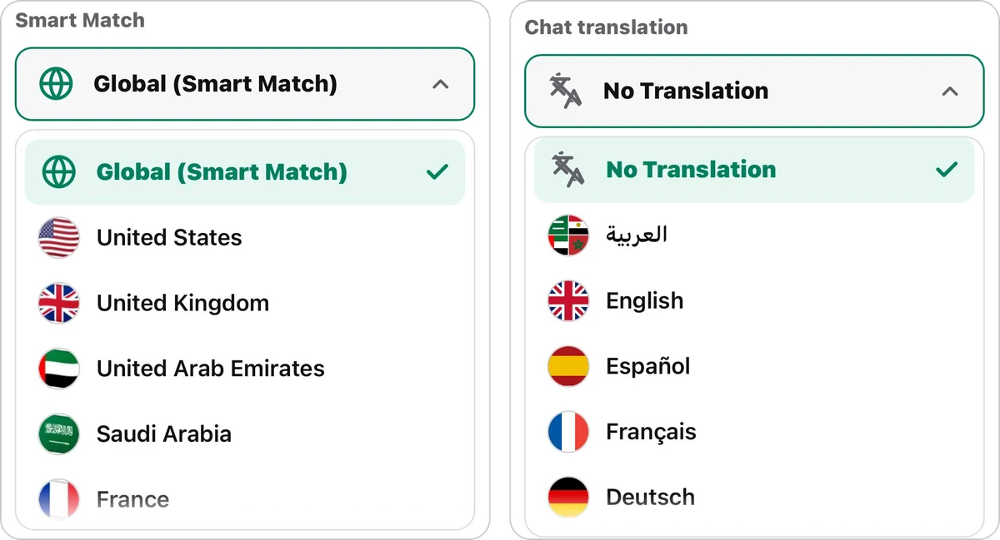

Randly vs Ome.tv: Mana Video Chat Acak yang Lebih Baik di 2026?
Terakhir diperbarui: Oktober 2026
Ome.tv adalah salah satu nama paling dikenal di dunia video chat acak, dan Randly adalah alternatif gratis yang lebih baru. Kalau kamu sedang menimbang di antara keduanya, perbandingan ini membahas hal-hal yang paling penting: akses, fitur, keamanan, dan penggunaan di ponsel.
Kami mencoba kedua situs ini sendiri dan mencatat temuan kami. Semua yang kami sampaikan tentang Ome.tv di bawah ini berasal dari pengujian kami sendiri, jadi kalau situs tersebut mengubah sesuatu di kemudian hari, detailnya bisa saja ikut berubah. Berikut perbandingannya, selangkah demi selangkah.
Cara Kami Membandingkan
Kami menilai kedua situs seperti pengguna baru pada umumnya. Kami mengajukan pertanyaan-pertanyaan sederhana:
- Bisakah saya mulai mengobrol tanpa membuat akun?
- Fitur apa saja yang gratis, dan mana yang berbayar?
- Bisakah saya memilih negara?
- Apakah ada terjemahan langsung?
- Apakah hanya video, atau saya juga bisa memakai chat teks?
- Apakah bisa dipakai di browser, atau harus memakai aplikasi?
- Apakah ada cara untuk melaporkan dan memblokir pengguna yang buruk?
- Apakah situs ini menjelaskan dengan jelas bahwa khusus untuk orang dewasa?
Ini adalah pertanyaan yang sama yang dimiliki kebanyakan orang sebelum memilih situs chat acak, jadi kami memakainya untuk menyusun perbandingan di bawah ini.
Perbandingan Singkat
| Fitur | Randly | Ome.tv |
|---|---|---|
| Harga | Gratis, tanpa paket berbayar, semua fitur disertakan | Chat dasar gratis; filter dan terjemahan berbayar (dalam pengujian kami) |
| Wajib mendaftar | Tidak | Ya, bahkan jika kamu memasang aplikasinya (dalam pengujian kami) |
| Pilihan negara | Ya, gratis | Berbayar (dalam pengujian kami) |
| Terjemahan pesan langsung | Ya, gratis, 12 bahasa | Berbayar (dalam pengujian kami) |
| Video chat | Ya | Ya |
| Chat teks | Ya | Tidak, hanya video (dalam pengujian kami) |
| Pencocokan minat | Ya | Tidak (dalam pengujian kami) |
| Bisa dipakai di browser | Ya, tanpa aplikasi | Ya, plus aplikasi (keduanya mewajibkan pendaftaran) |
| Laporkan dan blokir | Ya | Ya |
| Konfirmasi usia saat masuk | Ya, pertanyaan 18+ di layar pertama | Tidak ditampilkan dalam pengujian kami |
Randly juga menyertakan mini-game XO bawaan, semuanya gratis.
Akses dan Harga
Randly tidak membutuhkan akun. Kamu membuka situsnya, memilih video atau teks, lalu menekan Mulai. Dalam pengujian kami, Ome.tv mewajibkan kami mendaftar sebelum mengobrol, dan itu tetap berlaku bahkan setelah kami mengunduh aplikasinya. Dengan Randly, kamu bisa streaming dan mengobrol sebagai tamu, tanpa akun sama sekali.
Hal ini lebih penting daripada kedengarannya. Mendaftar berarti memilih nama pengguna, mengisi data, dan menunggu, dan banyak orang langsung menutup tab pada tahap itu. Kalau kamu ingin mencoba chat acak selama lima menit, situs yang memungkinkan kamu langsung mulai jelas jauh lebih cocok.
Soal harga, Randly sama sekali tidak punya paket berbayar. Semua fitur tersedia untuk semua orang. Dalam pengujian kami, chat dasar di Ome.tv gratis, tetapi filter dan terjemahan merupakan fitur berbayar.
Pencocokan dan Filter
Randly memberimu mode global untuk bertemu siapa saja, atau filter negara jika kamu ingin berbicara dengan orang dari tempat tertentu. Kamu juga bisa menambahkan minat agar dipertemukan dengan orang yang punya minat yang sama, sesuatu yang tidak kami temukan di Ome.tv.
Ini salah satu perbedaan terbesar. Misalnya kamu dari Mesir dan ingin berbicara dengan seseorang dari Turki: di Randly, memilih negara itu gratis. Dalam pengujian kami, Ome.tv memungut biaya untuk filter negara.
Pencocokan minat juga mengubah suasana obrolan. Saat kamu dipertemukan dengan seseorang yang menyukai game, musik, atau topik yang sama, kamu tidak perlu mengarang percakapan dari nol. Kalian sudah punya sesuatu untuk dibicarakan.
Video dan Chat Teks
Randly menawarkan video chat dan chat teks. Dalam pengujian kami, Ome.tv hanya video, tanpa opsi chat teks.
Memiliki kedua opsi itu berguna dalam praktiknya. Kadang kamu berada di tempat yang tidak memungkinkan memakai kamera atau mikrofon, atau kamu memang lebih suka mengetik, terutama saat berlatih bahasa. Dengan chat teks, kamu tetap bisa memakai situs ini di saat-saat seperti itu.
Bahasa dan Terjemahan
Kalau kamu ingin mengobrol lintas bahasa, Randly menawarkan terjemahan langsung opsional untuk chat teks dalam 12 bahasa. Di Randly, pengguna dari Mesir bisa mengobrol dengan pengguna dari Turki dan membaca percakapannya dalam bahasa Arab tanpa biaya. Dalam pengujian kami, Ome.tv menempatkan terjemahan di balik paket berbayar.
Bagi siapa pun yang memakai chat acak untuk berlatih bahasa atau bertemu orang dari budaya lain, perbedaan ini sangat berarti. Terjemahan gratis mengubah sekadar “halo” tanpa kelanjutan menjadi percakapan yang benar-benar bisa kamu ikuti.
Pengalaman di Ponsel
Randly bisa langsung dipakai di browser ponselmu, tanpa aplikasi. Kamu membuka tautannya dan langsung masuk. Ome.tv bisa dipakai di browser dan juga punya aplikasi, dan dalam pengujian kami kedua opsi itu mewajibkan pendaftaran.
Kalau kamu lebih sering mengobrol dari ponsel, cara termudah adalah yang tidak meminta kamu memasang apa pun atau membuat akun terlebih dahulu.
Keamanan dan Moderasi
Kedua situs menyediakan fitur pelaporan dan pemblokiran. Randly menyertakan opsi laporan instan dan secara otomatis memblokir pengguna yang menerima beberapa laporan, untuk jangka waktu terbatas. Randly juga tidak menyimpan percakapanmu, dan layar pertamanya meminta kamu mengonfirmasi bahwa usiamu 18 tahun atau lebih sebelum bisa masuk. Pengguna di bawah 18 tahun tidak diperbolehkan. Dalam pengujian kami, Ome.tv tidak menampilkan pemberitahuan usia saat kami masuk.
Situs mana pun yang kamu pilih, aturannya sama: jangan pernah membagikan data pribadi, lewati siapa pun yang membuatmu tidak nyaman, dan ingat bahwa usiamu harus 18 tahun atau lebih.

Beginilah perbedaan yang kami rasakan saat mencoba keduanya. Di Ome.tv, kami harus mendaftar sebelum bisa mulai, di situs web dan sekali lagi di aplikasi. Di Randly, kami mengonfirmasi usia dan langsung mengobrol sebagai tamu. Lalu, ketika kami ingin berbicara dengan seseorang dari negara tertentu, Randly membiarkan kami memilihnya secara gratis, sedangkan Ome.tv meminta pembayaran. Terjemahan langsung juga begitu: gratis di Randly, berbayar di Ome.tv.

Mana yang Cocok untuk Situasi Apa?
Pilihan terbaik tergantung pada apa yang kamu inginkan dari chat acak. Berikut cara sederhana untuk memikirkannya:
- Kamu ingin langsung mencoba, tanpa pengaturan apa pun. Randly lebih cocok, karena kamu bisa mulai sebagai tamu tanpa akun.
- Kamu ingin berbicara dengan orang dari satu negara tertentu. Randly membiarkan kamu memilih negara secara gratis, sedangkan dalam pengujian kami Ome.tv memungut biaya untuk ini.
- Kamu ingin berlatih bahasa. Terjemahan langsung gratis dalam 12 bahasa, ditambah chat teks, membuat Randly lebih mudah untuk latihan bahasa.
- Kamu ingin mengobrol dengan mengetik, bukan memakai kamera. Randly punya chat teks. Dalam pengujian kami, Ome.tv hanya video.
- Kamu sudah terbiasa dengan Ome.tv dan tidak keberatan mendaftar. Maka kamu mungkin memilih tetap bertahan dengan yang sudah kamu kenal.
Tips Agar Obrolan Lebih Seru di Situs Mana Pun
Beberapa kebiasaan bisa meningkatkan pengalaman di situs chat acak mana pun:
- Mulailah dengan pertanyaan yang sungguh-sungguh, bukan sekadar “hai”. Sesuatu seperti “belakangan ini kamu lagi suka apa?” akan mendapat jawaban yang lebih baik.
- Gunakan filter kalau tersedia. Kecocokan negara atau minat membuatmu tidak perlu terus-menerus melewati orang.
- Jangan ambil hati orang yang kasar. Lewati saja, laporkan jika mereka melanggar aturan, lalu lanjutkan.
- Jaga data pribadimu tetap privat, meskipun percakapannya terasa ramah.
Tips Keamanan untuk Situs Chat Acak Mana Pun
Apa pun situs yang kamu pakai, beberapa kebiasaan ini membuatmu lebih aman:
- Jangan pernah membagikan nama lengkap, alamat, sekolah, tempat kerja, atau nomor teleponmu.
- Jangan klik tautan dari orang asing.
- Lewati atau laporkan siapa pun yang membuatmu tidak nyaman.
- Ingat bahwa siapa pun bisa merekam layar mereka.
- Jangan mengirim uang atau hadiah kepada orang yang kamu temui di chat acak.
Siapa yang Sebaiknya Memilih Randly?
- Orang yang ingin langsung mulai tanpa akun
- Siapa pun yang menginginkan pilihan negara dan terjemahan gratis
- Orang yang lebih suka memakai browser daripada memasang aplikasi
- Orang yang menginginkan video chat dan chat teks di satu tempat
- Orang yang suka dipertemukan berdasarkan minat
- Pelajar bahasa yang ingin mengobrol dengan orang dari negara lain
Siapa yang Mungkin Lebih Suka Ome.tv?
Ome.tv adalah nama yang sudah dikenal dengan basis pengguna besar, jadi sebagian orang memang lebih suka opsi yang familier. Tetapi kalau pendaftaran dan filter berbayar mengganggumu, Randly adalah pilihan yang lebih sederhana.
FAQ
Apakah Randly gratis?
Ya, video chat dan chat teks gratis tanpa biaya tersembunyi. Tidak ada paket berbayar.
Apakah saya perlu akun untuk memakai Randly?
Tidak. Kamu bisa langsung mengobrol sebagai tamu.
Apakah Ome.tv mewajibkan pendaftaran?
Dalam pengujian kami, ya. Kami harus mendaftar untuk memakainya, bahkan setelah memasang aplikasinya.
Bisakah saya memakai Randly di ponsel?
Ya, bisa dipakai di browser ponsel tanpa perlu mengunduh aplikasi.
Apakah pilihan negara gratis di Randly?
Ya. Pilihan negara dan terjemahan langsung sama-sama gratis di Randly. Dalam pengujian kami, Ome.tv memungut biaya untuk keduanya.
Apakah Randly punya chat teks?
Ya. Randly punya video chat dan chat teks. Dalam pengujian kami, Ome.tv hanya menawarkan video.
Apakah Randly khusus untuk orang dewasa?
Ya. Randly hanya untuk 18+, dan layar pertamanya meminta kamu mengonfirmasi usia sebelum bisa masuk.
Apakah Randly alternatif Omegle?
Ya. Lihat panduan alternatif Omegle terbaik kami.
Kesimpulan
Kedua situs memungkinkan kamu bertemu orang asing lewat video, dan keduanya menyediakan pelaporan dan pemblokiran. Perbedaannya terletak pada akses dan biaya. Dalam pengujian kami, Ome.tv mewajibkan pendaftaran dan memungut biaya untuk filter negara dan terjemahan, serta hanya menawarkan video. Randly tidak membutuhkan akun, menyertakan video chat dan chat teks, pencocokan minat, pilihan negara gratis, dan terjemahan gratis dalam 12 bahasa, serta tidak punya paket berbayar.
Kalau kamu menginginkan pengalaman gratis tanpa pendaftaran dengan filter negara dan terjemahan, coba Randly.